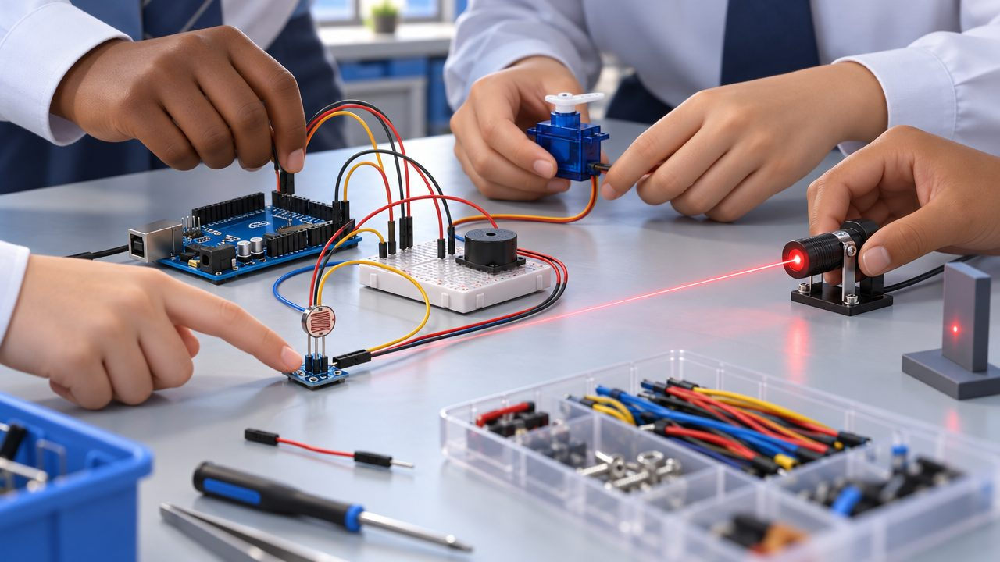
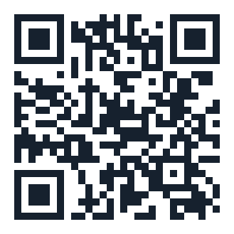

Láser espía · Parte 06 · Equipo
Cinco integrantes. Un mismo proyecto.
Proyecto grupal de 7.º grado. Aportamos el montaje del circuito, la integración de Arduino, el láser, el sensor, el servomotor y los componentes de conexión y señalización.
Project summary · parte 06 · resumen en inglés
Our team has five members: Britany, Fernanda, Gabriela, Génesis and Patricia. We learned to connect and program an Arduino and to control a servo motor. The hardest parts were the connections and the servo program; next, we want to improve the connections, adjust the program and make the structure stronger.
Lumi te presenta al equipo con su voz en menos de un minuto. En Paso a paso avanzas tú, a tu ritmo: con el botón Siguiente, las flechas del teclado o un control de presentaciones.

06 · Nuestro equipo
El equipo
- Britany7.º grado
- Fernanda7.º grado
- Gabriela7.º grado
- Génesis7.º grado
- Patricia7.º grado
Lo que aportamos juntas
- Montaje del circuito
- Integración de Arduino
- Láser
- Sensor
- Servomotor
- Conexión y señalización
Bitácora del equipo
Nuestra bitácora
Lo que aprendimos, lo que logramos, lo que nos costó y lo que vamos a mejorar. Toca una tarjeta para darle la vuelta.
Próximas mejoras · demostración
La mejora: reforzar la estructura
Reforzar la estructura es una de nuestras próximas mejoras: si el soporte del láser está flojo, el haz tiembla, deja de llegar al sensor y la alarma suena sin que pase nadie.
Cierre
Tecnología que se aprende haciendo.
¡Gracias!
Gracias por acompañarnos en la misión del láser espía. Prueba todas las partes desde tu celular.

Seguridad: nunca mires el láser directo ni lo apuntes a ojos, espejos o pantallas, y desconecta la batería antes de cambiar piezas o cables. (Láser clase 3R, hasta 5 mW aprox.)